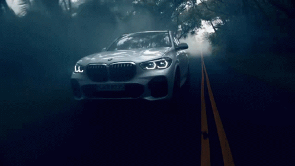

Automotive are one of my interests. Since I was a child, I have been passionate about vehicles,
be it 4x4s, SUVs (Sport Utility Vehicles) or luxury cars.
The noise of the engines, the exhaust pipes, the mechanism, the bodywork...
That's also where my passion for cars comes from.
Listen Skidding sound:

The Football
Football is my biggest passion, I have been playing it since I was a kid and still do,
it's one of the only passions that is common in my life. I played football in a club for 9 years
between 2011 and 2019 and I still play today with friends. Football has always made me dream
I have always dreamt of playing football, whether it was on television, at a club, or even live in a stadium. It is a passion that has made me
It is a passion that has made me discover new friends and that has allowed me to acquire several skills over the years.